Daha iyi bir deneyim için lütfen telefonunuzu yatay çevirin.
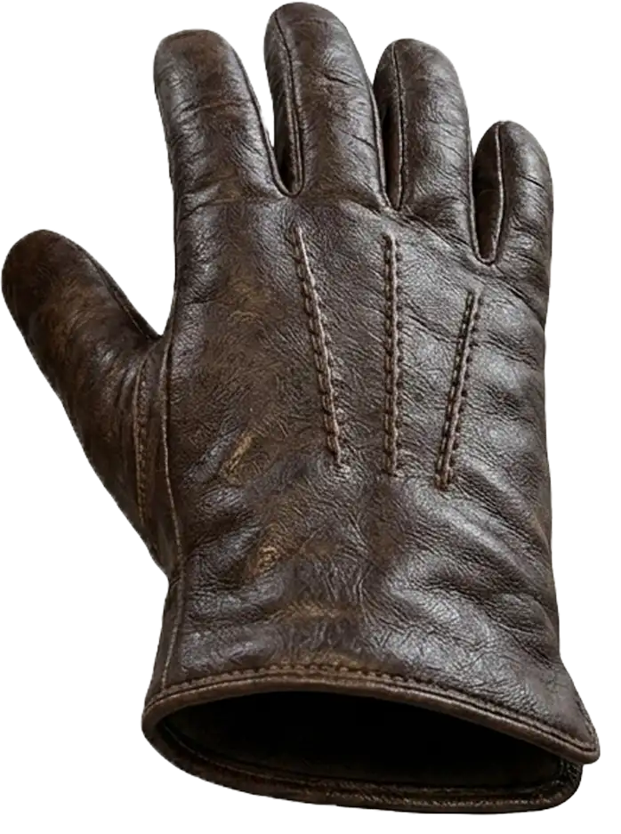
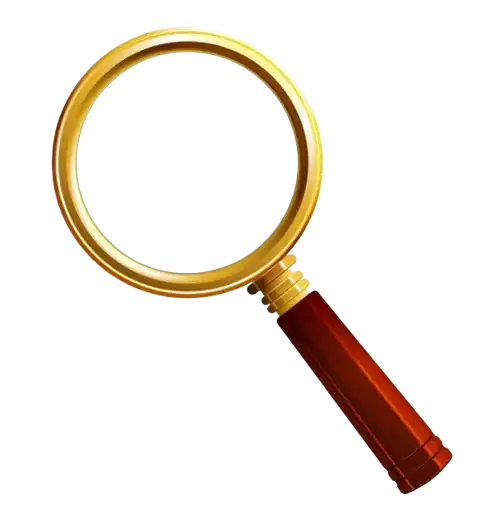
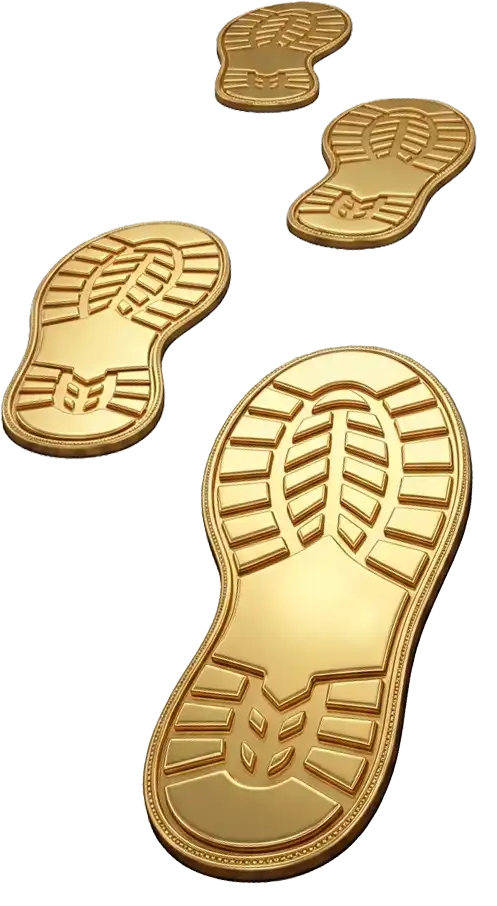
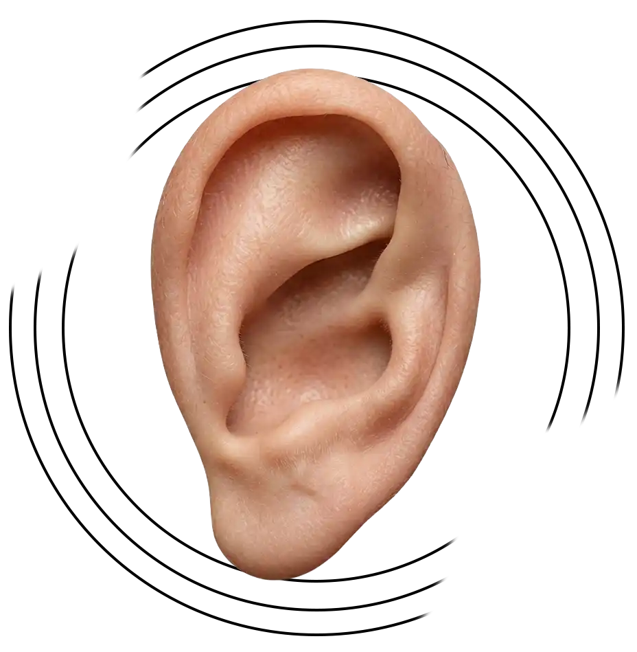
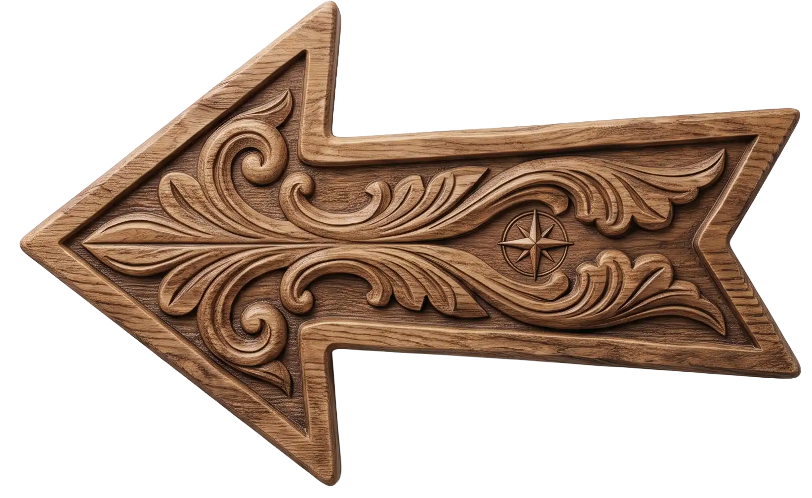
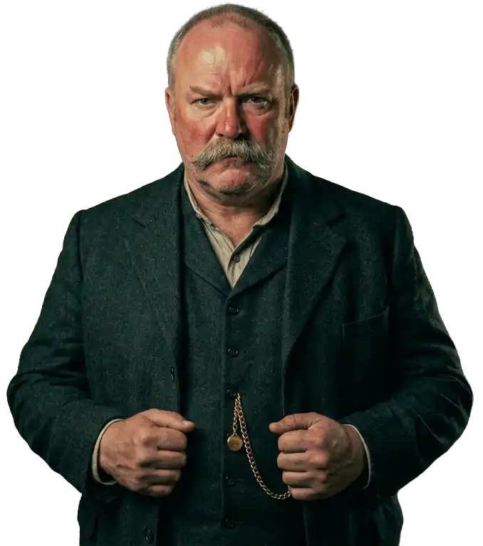
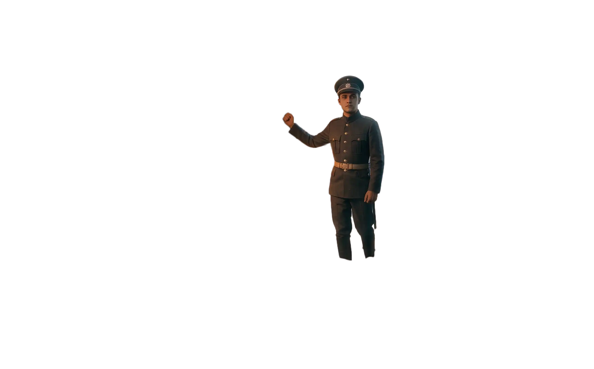
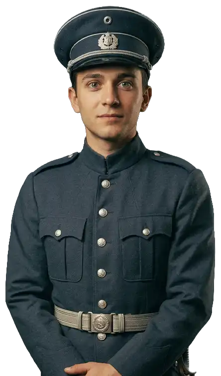
Sislidere Köyü'nde yaşanan ölümlerin ardındaki gerçeği araştırıyorsun. Köyü gez, insanlarla konuş, ipuçlarını topla ve doğru kişiyi bul.
Ekranda nabız gibi atan simgeler tıklanabilir noktaları gösterir.
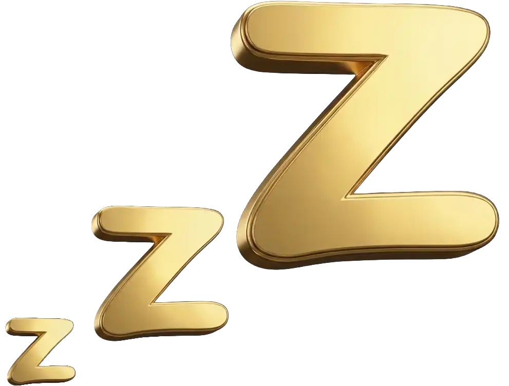
Etrafında hafif bir parıltı olan karakterler tıklanabilir. Konuşmak için karaktere tıkla, sonraki cümleye geçmek için tekrar tıkla.
Sağ alttaki harita, köyde gitmek istediğin yere hemen ulaşmanı sağlar. Not defterine ipuçlarını yazabilir, şüphelilerin yanına not alabilir, çizim yapabilirsin.
Oyun yedi gün sürer. Ofisteki yatağa tıklayıp uyuduğunda bir sonraki güne geçersin. Bazı yerler belirli günlerde kapalıdır. Uyumadan önce ipuçlarını topladığından emin ol.
Yedinci günün sonunda suçlamanı yapacaksın. Bol şans dedektif!
Merhaba! Ben RENC.
Hikaye anlatıcılığına ve içerik üretmeye olan tutkumla RENC YouTube Kanalı üzerinden fikirlerimi, projelerimi ve dünyamı sizlerle paylaşıyorum.
Oyun geliştirme serüvenim, fiziksel olarak tasarlayıp hazırladığım zarf içi dedektiflik oyunuyla başladı. Masada dokunarak, zarfları açıp ipuçlarını birleştirerek oynanan o ilk deneyimin ardından, hikayelerimizi ve gizemlerimizi çok daha geniş kitlelere ulaştırabilmek adına ikinci oyunumuzla birlikte dijital dünyaya adım attık.
Bu projeyi hayata geçirirken amacımız; sizi sürükleyici bir atmosfere çekmek, detaylarda gizlenmiş sırları çözdürürken unutulmaz bir dedektiflik deneyimi yaşatmaktı. Umarız oyunu oynarken bizlerin hazırlarken duyduğu heyecanı ve keyfi hissedersiniz!
İyi seyirler ve bol şans dedektif!
RENC
Aylin Kılınçarslan
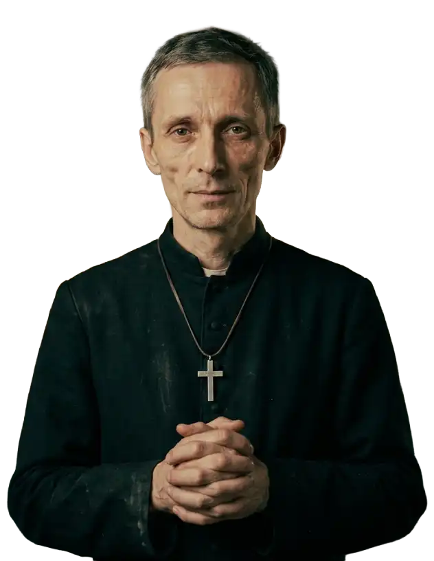
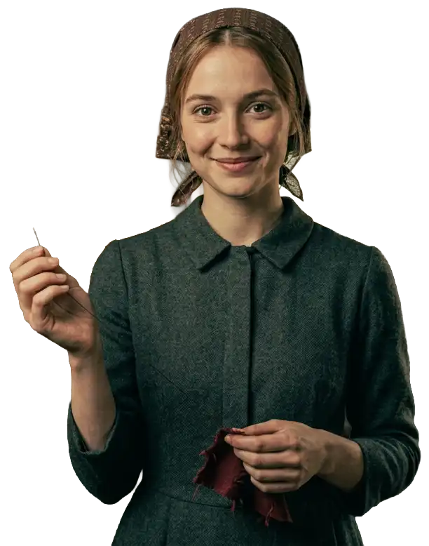
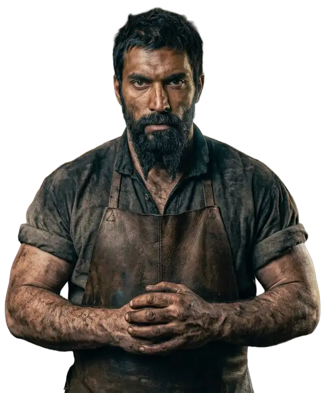
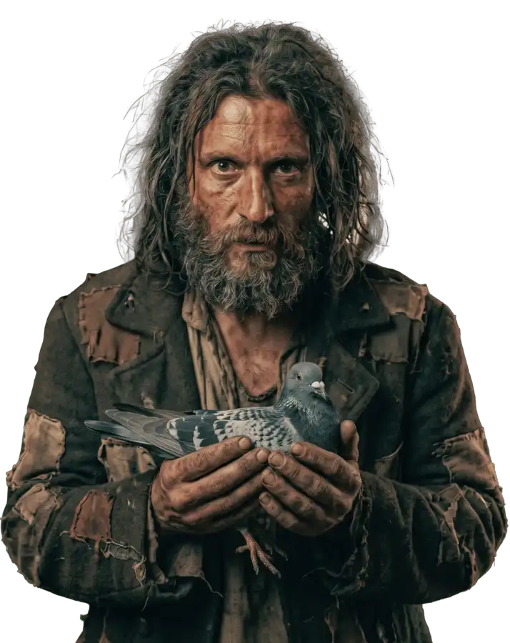
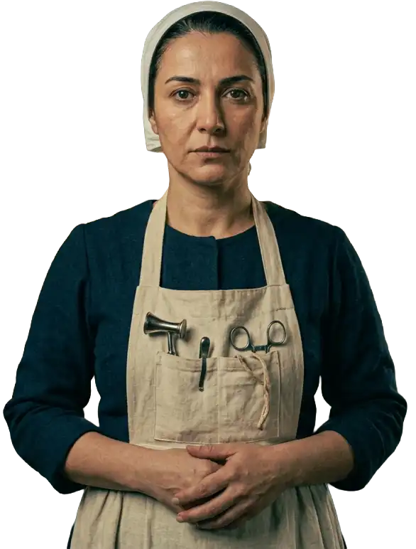
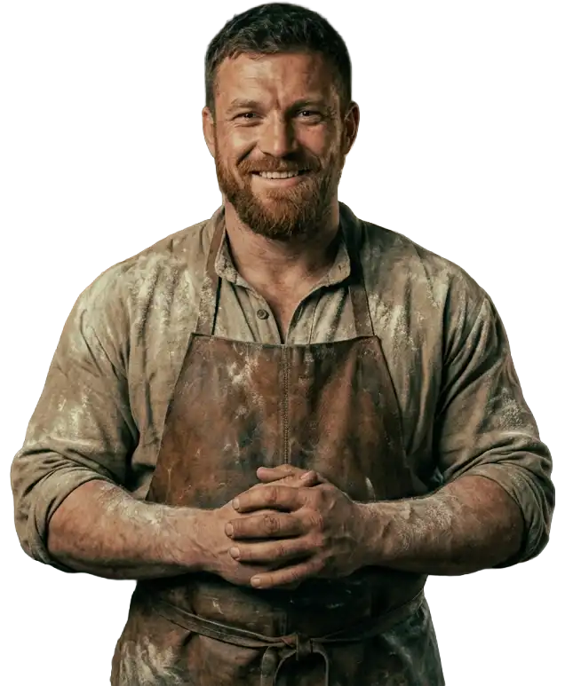
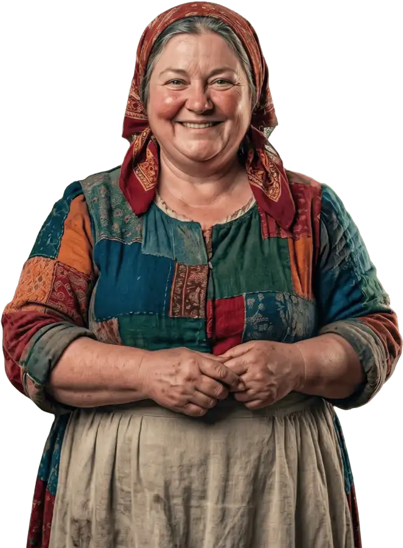
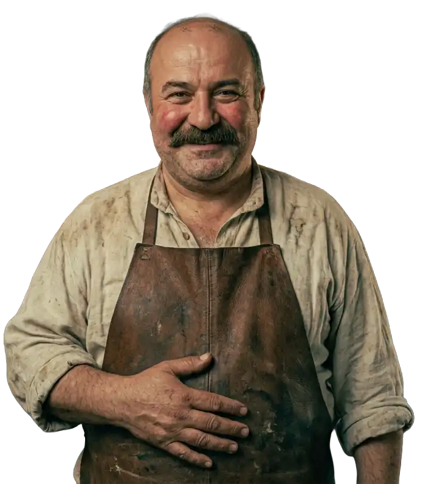
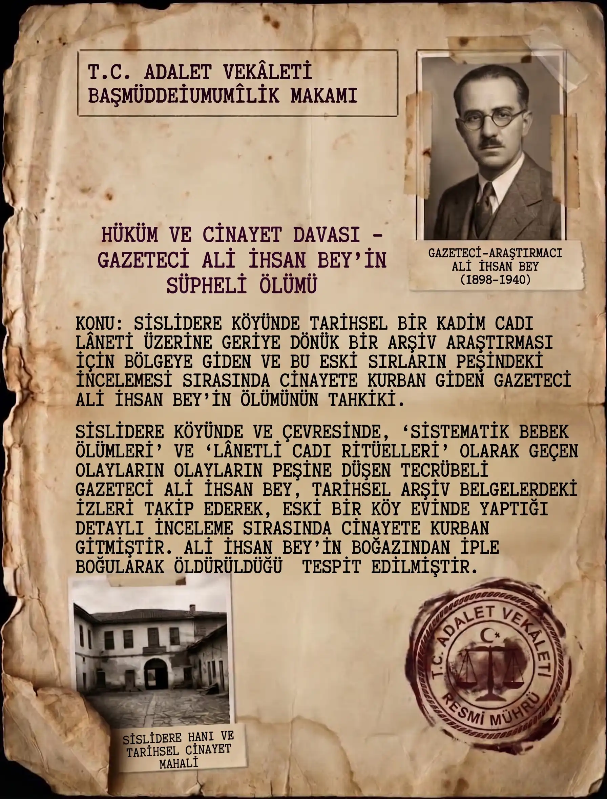